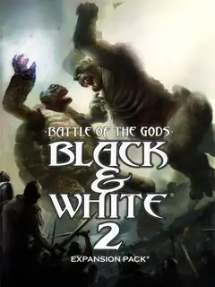

Black & White 2: Battle of the Gods
Black & White 2: Battle of the Gods
Detalles
 |
|
| Tiempo de juego | No Jugado |
| Última actividad | Nunca |
| Añadido | 20/11/2025 22:50:07 |
| Modificado | 20/11/2025 23:14:11 |
| Estado de finalización | Not Played |
| Librería | Playnite |
| Fuente | |
| Plataforma | PC (Windows) |
| Fecha de lanzamiento | 24/4/2006 |
| Puntuación de la Comunidad | 61 |
| Puntuación de la Crítica | 60 |
| Puntuación de usuario | |
| Género | Adventure Real Time Strategy (RTS) Simulator Strategy |
| Desarrollador | Lionhead Studios |
| Editor | Electronic Arts |
| Característica | Single Player |
| Enlaces | |
| Tag | |
Descripción
Esta expansión es clave porque cambia el tono del juego. Pasás de pelear contra civilizaciones humanas a pelear contra algo sobrenatural. Es mucho más oscuro y la dificultad sube bastante.
¿Cómo vas a gobernar cuando tus enemigos ya están muertos?
Acá la cosa se pone oscura de verdad. Aparece un dios nuevo, pero no es cualquier rival: es un Dios Muerto Viviente. Literalmente. Su ejército no son personas que podés convertir con ciudades lindas; son zombies y esqueletos que marchan sin miedo. A estos tipos no los impresionás con una fuente de agua, los tenés que reventar.
Guerra Sobrenatural
- El Enemigo Final: Te enfrentás a una deidad nigromante. Sus ejércitos son hordas de esqueletos y zombies que no tienen moral ni miedo. La estrategia pacífica de "construir lindo" es mucho más difícil de aplicar acá; vas a tener que ensuciarte las manos.
- Nuevas Criaturas: Se suman al panteón el majestuoso Tigre y la Tortuga. Son bestias nuevas listas para aprender tus caminos, ya sean benévolos o destructivos.
- Milagros de Vida y Muerte: El arsenal divino se expande.
- Resurrección: ¿Tus mejores soldados murieron defendiendo la muralla? Traelos de vuelta a la vida para que sigan peleando.
- Lava: Porque a veces, la única solución es fundir todo.
- Atmósfera Oscura: El tono del juego cambia drásticamente. Los mapas son más lúgubres, la dificultad es más alta y la sensación de urgencia es constante.
Es el cierre épico para la saga de Lionhead. Preparate para la batalla final entre la vida y la muerte.